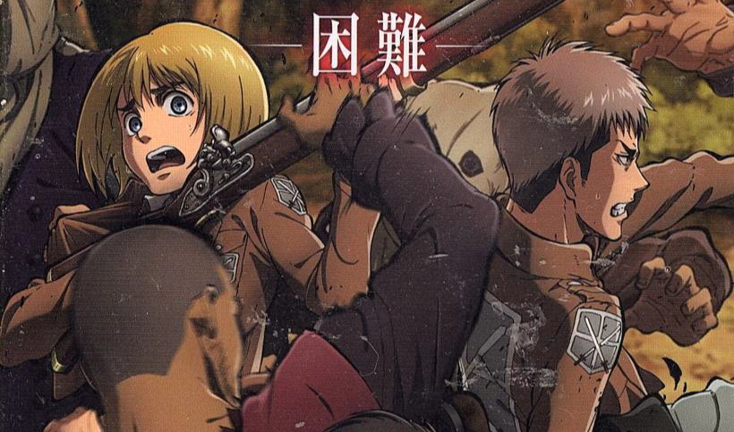

| Title | Distress |
|---|---|
| Japanese Title | Konpaniku |
| Type | OVA |
| Release Date | August 8, 2014 |
| Duration | Approximately 24 minutes |
| Based On | Attack on Titan manga |
| Studio | Wit Studio |
Distress follows the members of the 104th Training Corps during a training exercise outside the Walls. The recruits are divided into groups and instructed to protect their supplies while completing the exercise.
Things quickly become more complicated when Sasha Blouse is separated from the others. The recruits must work together to find her and recover the supplies while dealing with an unexpected threat.
Jean Kirstein, Eren Yeager and the other trainees are forced to cooperate despite their differences. The situation tests their ability to remain calm and make decisions under pressure.
The OVA focuses on the relationships between the members of the 104th Training Corps and gives additional attention to their lives and experiences during their military training.